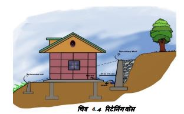
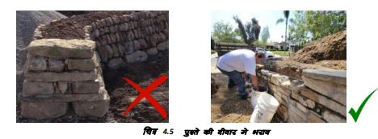
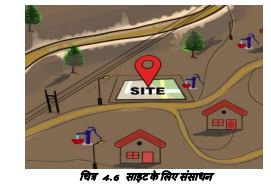
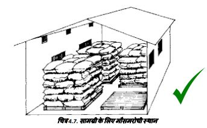
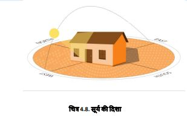
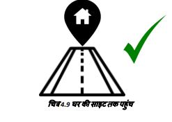
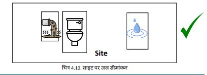

साइट कनेक्टिविटी की जाँच करें
स्थल की सफाई के दौरान प्राप्त पत्थरों को ढेर में इकट्ठा किया जाना चाहिए क्योंकि उनका उपयोग निर्माण और समतलीकरण के कार्यों में किया जा सकता है। हालांकि, सीमेंट, लकड़ी आदि जैसी अन्य निर्माण सामग्री को मौसम रोधी शेड के नीचे रखा जाना चाहिए।
ढलान को 0.5 से 1 मीटर ऊंचे चरणों में काटें और काटने के दौरान प्राप्त पत्थरों को इकटठा या एकत्रित करें।
● घर बनाने के लिए एक बड़ा मैदान प्राप्त करने के लिए ढलान को 1 मीटर से अधिक गहरा काटने से बचें, इसके बजाय सीमित गहराई वाले कई मैदान बनाएं। दानेदार सामग्री/मिट्टी का उपयोग करके साइट को समतल करें।
पुश्ते की दीवार और भराव से पानी की निकासी की व्यवस्था करें। यह बजरी व टुटे हुए पत्थर और पुष्ते की दीवार मे छोटे छेद कर के किया जा सकता है।
• जलभराव से बचने के लिए निर्माण का स्थान तैयार करते समय जल निकासी की व्यवस्था सुनिश्चित करे.
ढलान को बनाए रखने और पानी की निकासी के लिए पत्थरों का उपयोग करके पपुश्ते की दीवारें बनाएं और बजरी व टूटे हुए पत्थरों से भराव करें।
निर्माण के स्थान पर पानी, बिजली, पहुंॅच मार्ग और सामाग्री स्टोर आदि की व्यवस्था करें।
सीमेंट के भंडारण के लिए मौसमरोधी स्थान की व्यवस्था करें। सीमेंट को जलरोधी ऊंचे स्थान पर स्टोर करें।
साइट के संबंध में सूर्य की दिशा पर ध्यान दें। पेड़ों और झाड़ियों जैसी बाधाओं को काटें। उचित सूर्य की रोशनी पाने के लिए खिड़कियाँ आदि लगाएँ।
घर के लिए एक अच्छा रास्ता चिह्नित करें।
पानी के स्रोत और इस्तेमाल किये हुए गन्दे पानी के निपटान के स्थानों को चिन्हित करें जहाँ शौचालय/शौचालय के गड्ढे बनाए जाएँगे। सुनिश्चित करें कि गंदा पानी साफ पानी के साथ न मिले।